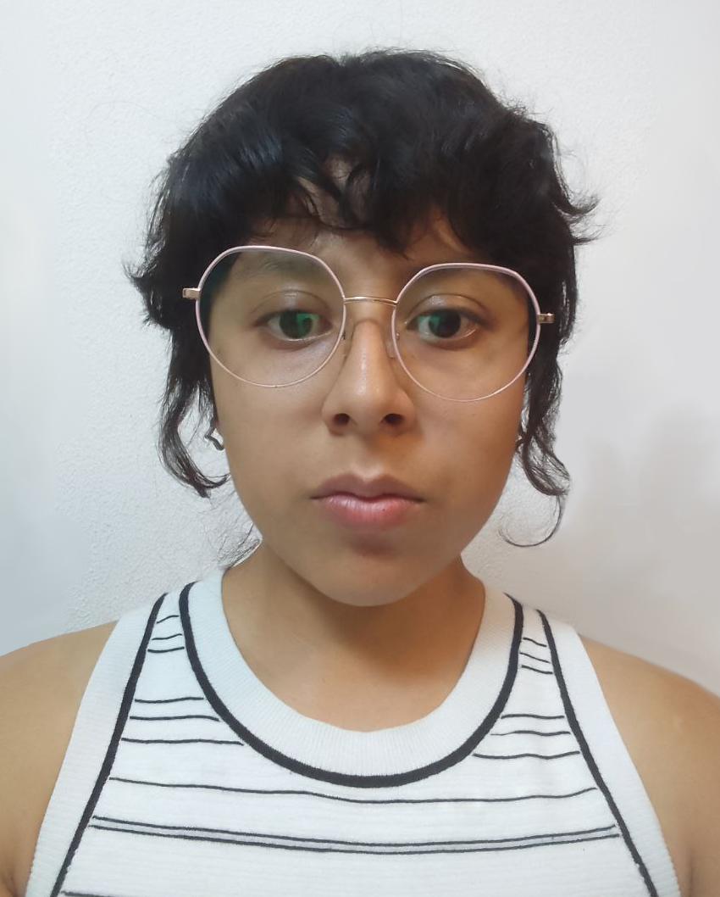

Características
- Es multimedia (incluye video, audio, imágenes y texto)
- Éstá estructurado según objetivos de aprendizaje o estándares
- Es reflexivo, pues incluye la autocrítica y justificación de las evidencias seleccionadas.
Ventajas
- Fomenta la autonomía y el pensamiento crítico del sujeto al hacerlo responsable de seleccionar, organizar y evaluar su propio trabajo.
- Ofrece una visión completa y flexible de las capacidades del individuo.
Desventajas
- Requiere ciertos conocimientos digitales para desarrollarse.
- Requiere tener evidencias digitales de su trabajo, por lo que puede significar un esfuerzo extra y complejo.
